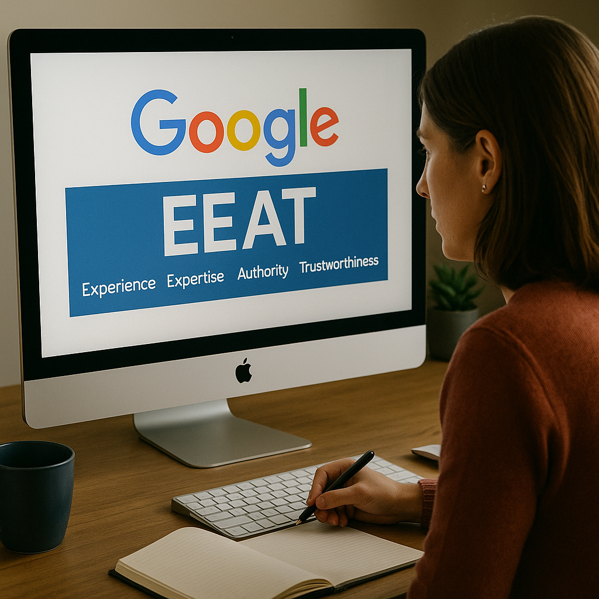
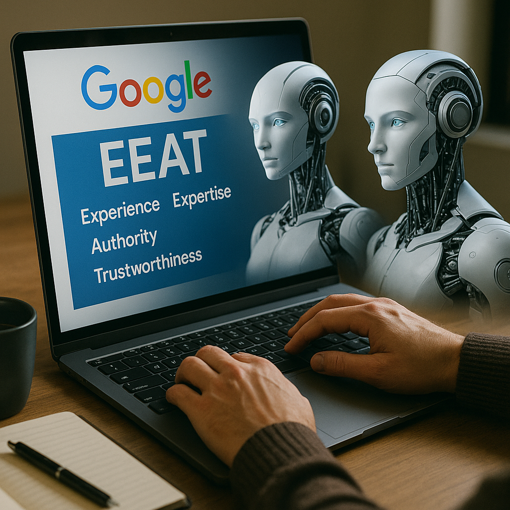
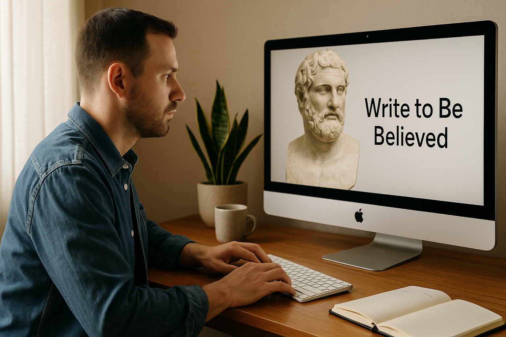

The days of keyword stuffing and faceless content mills are long gone.
In 2025, Google’s EEAT guidelines—Experience, Expertise, Authority, and Trustworthiness—aren’t just about SEO compliance.
They’re about credibility in the trust economy.
For writers like us, it’s not just about ranking. It’s about earning belief.
Here’s what that means, and how we can rise to the occasion.
🔍 From Ranking Trick to Credibility Blueprint

EEAT began as part of Google’s Search Quality Evaluator Guidelines, but its impact has now fully matured.
Since 2022, when “Experience” was added to the acronym, EEAT has gone from back-end audit to frontline survival guide.
And while it’s not a direct ranking factor, it deeply informs how content is indexed, evaluated, and surfaced, especially in AI-driven SERPs.
The message from Google is clear:
Write for people. Prove your knowledge. Build trust.
📚 Understanding the Four Pillars
Experience
This is your lived story.
Your scars, wins, hands-on work, and lessons learned.
Whether you’re reviewing software, teaching mental wellness, or writing about parenting, firsthand experience makes your writing resonate and rank.
🔍 Why it matters: Real experiences reduce misinformation and bring depth that AI or generic ghostwriters simply can’t fake.
Expertise
This is your demonstrated knowledge, either through formal education or deep practice.
Degrees and credentials matter, but so does a 10-year career, niche case studies, or active participation in the field.
🎯 Writers should: Add bylines, author bios, and context that reveals their “why” for writing on a topic.
Authority
This is how the world sees you.
Backlinks, mentions, guest posts, podcast features, and LinkedIn recognition all feed into your perceived authority.
💡 Tip: Don’t just build your blog. Build a content footprint across platforms to show your influence.
Trustworthiness
This is the foundation.
Transparent sourcing, accurate citations, and reader-first clarity.
Your article should signal:
- ✅ “This is safe.”
- ✅ “This is researched.”
- ✅ “You’re in good hands.”
🤖 EEAT vs. AI: The Human Advantage

Contrary to fear-mongering, AI-generated content is not banned by Google.
What matters is oversight.
AI-assisted ≠ AI-dominated.
✅ Content infused with lived insights, real quotes, and authentic storytelling?
That’s what gets indexed.
🧠 The future of content isn’t AI.
It’s more humanity.
💼 How Writers Can Build EEAT in 2025
✍️ Tactical Moves
- Author bios that show credibility
- Internal + external links to authority sources
- Regularly updated content
- Portfolio case studies and client results
📈 Real-World Examples of EEAT in Action
🧪 Healthline
Their content ranks high due to:
- Named authors + reviewer credentials
- Clear medical disclaimers
- Structured sourcing from academic journals
💼 Moz Blog
Demonstrates topical authority in SEO:
- Long-form, detailed guides
- Community interaction
- Evergreen updates
✍️ Medium Example: “Navigating ADHD as a Job-Seeking Millennial Mom”
Written by a verified author with ADHD, this Medium article went viral not just for its vulnerability, but because:
- It cited medical sources
- Included personal reflection
- Linked to lived strategies and support tools
🌍 Whose Knowledge Gets Recognized?
Here’s the dilemma:
EEAT risks centering Western, institutional knowledge, dismissing cultural, indigenous, or lived expertise from the Global South.
We must challenge that.
A herbalist with decades of indigenous knowledge deserves recognition
A farmer writing about climate adaptation in Kenya is a subject-matter expert
Ubuntu, Buen Vivir, and Amanah are valid knowledge frameworks, even if not taught in universities
🗣️ EEAT must become more plural and inclusive.
💬 Final Reflection: Write to Be Believed

In 2025, the best-performing content will not just be well-structured or optimized.
It will be earned through transparency, lived knowledge, and audience-first purpose.
So I ask:
Will your next article feel like another SEO entry, or a guidepost readers can trust? 🧭✍️📣